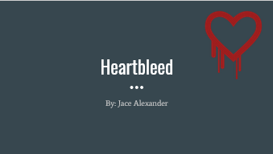

Portfolio Item #1

Create a Network Infrastructure design communications document that includes identified hardware components, connections to the outside world, identified physical layer connectivity (media) and addressing, including operational and security components in the design. Create a network infI had to make a network infrastructure that has been designed with communication and hardware compoents to connect internally and to the outside world. download
Portfolio Item #2

Install, configure and test security hardware and software tools with supporting documentation such as port scanners, vulnerability detection systems, intrusion detection systems, firewalls, system hardening, anti-virus tools, patch management, auditing, and assessment. I had to use AVG and other AV tools along side with some firewall rules/patch mangement within the windows system themself. download
Portfolio Item #3

Construct, implement and document a script or a program to automate a security-related process or other tasks such as installation, administration, management, mapping resources, logon scripts, patch management, updates, auditing, analysis, and assessment. I made an automation script to help companies research the all the ports they have open on their systems while making it quick and easy for them to run download
Portfolio Item #4

Create a policy or procedure that addresses events such as: a disaster recovery plan, a business continuity plan, an incident response policy, an acceptable usage document, an information security policy, a physical security policy, assessments or troubleshooting procedures. I had to create a plan of disaster recovery and how to plan/budget it out while applying to the NIST Federal informational processing standards based upon SP 800-76. download
Portfolio Item #5

Develop a research report or implementation plan concerning legal and ethical best practices and mandated requirements that pertain to information security. When it comes to researching Network Security and the issues it can be hard due to the fact of it forever changing. But, I did a report on cloud computing and how it can be an issue legally and how it can walk so many grey lines at the same time. download
Portfolio Item #6
Research, document, test and evaluate several current industry information security based threats, risks, malicious activities, covert methodology, encryption technologies, mitigation techniques or unconventional tactics to prevent loss of sensitive information and data confidentiality, integrity and availability. Through the time within some of my classes I had to use my skills to research threats and malicious activities. download